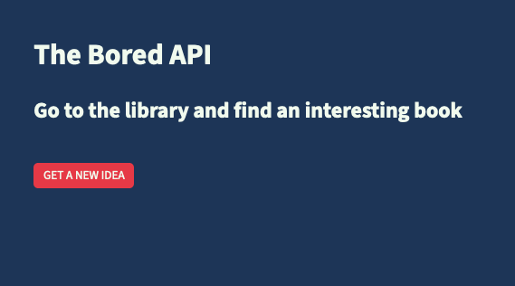

Jan 19, 2024
The Bored Bot API
This is my very API project, designed to learn how to use Fetch.

What's the Bored Bot?
This is going to be short 😂 There is a single page and a button. On click, it queries the Bored API and give you an idea on how to keep you busy.
Under the hood, I have learnt how to use Fetch to access an array and render the content of it via DOM manipulation. So the project works in one way only, from the server to the client. This basic functionality already opens tons of possibility as I am starting to explore which public APIs are fun to play with.